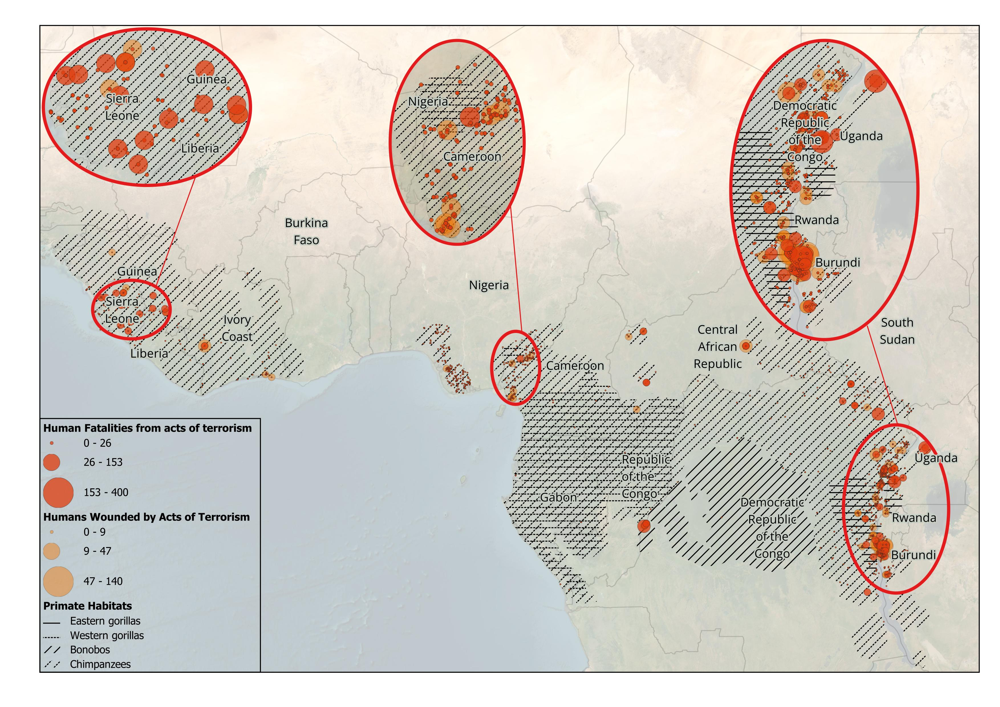

Terrorism Endangers Ape Conservation
The Problem
Defense against terrorism can save endangered African apes from extinction. Primates overlap with large expanding human populations characterized by high levels of poverty in countries with great inequality. These conditions are drivers of terrorism in sub-Saharan Africa, which causes the displacement of people and increases poverty. Poverty drives people to seek food from bushmeat and creation of refugee camps and new settlements results in the deforestation of ape habitats. Apes are already among the most endangered mammals in the world and terrorism is an overlooked stressor. Why should we care if apes become extinct in our lifetime? Apes are our closest living relatives and their behaviors tell the story of our shared evolutionary history. If that isn’t enough, apes have essential roles in their local ecosystems and their loss will cause wider environmental damage. Ultimately, human health is at risk when diseases jump from apes to humans due to bushmeat hunting (like HIV)—we also give apes our diseases like ebola, which destroyed one-third of the gorillas, and coronavirus. The cost to apes is higher because their populations are much smaller than ours.
Mapping the Problem

The map includes only terrorist attacks that occurred in a primate habitat and demonstrates the extent of overlap between humans and primates in hotspots show in the insets. These areas of overlap exacerbate threats to ape conservation from bushmeat hunting for food, deforestation from growing human populations, and disease transmission from humans to apes (and apes to humans but with lower impact). Terrorism data are from the Global Terrorism Database. Primate habitat data shp files are from: the Mammal Diversity Database. (2020); Mammal Diversity Database (Version 1.2) [Data set]; Zenodo; Map of Life. (2021); Mammal range maps harmonised to the Mammals Diversity Database [Data set]. The basemap is ESRI Satellite.Underlying Causes of Terrorism that Affect Primate Conservation
The story of poverty and inequality that generate unrest and insurgency is seen most keenly in the terrorism hotspots, inset on the map. The right-most inset in the east where the Democratic Republic of Congo (DRC) borders Uganda and Burundi is the most critical in need of addressing. The DRC is #9 in the world in the [Global Terrorism Index 2020](https://reliefweb.int/attachments/93b527d8-5b8d-3ea1-bc5e-f810e42d45df/GTI-2020-web-2.pdf. Terror-related incidents rose by 58% in 2019. These were mainly attributable to the Allied Democratic Forces, who were responsible for 17% of the 1,330 acts of terrorism depicted on the map. War on the forested areas of the DRC has increased deforestation (for fuel) and bushmeat (for food). While the DRC is positioned for economic success due to an abundance of natural resources, internal conflict hampers prosperity. At its borders, Burundi is the poorest country in the world and perhaps most famous for the ethnic conflicts between the Hutu majority and Tutsi minority. While Uganda has become comparatively stable and prosperous, the northern part of the country is an epicenter of activity by the Lord’s Resistance Army (a group also active in DRC).
Two additional areas are identified as needing intervention. The border of Nigeria and Cameroon is shown in the center inset. These countries have wealth and high education but Cameroon struggles with corruption and multiple insurgent groups and Nigeria struggles with internal ethnic conflict, land-use rights, and multiple insurgent groups. Nigeria suffers great wealth inequality due to corruption in the distribution of oil profits. Despite internal efforts in Cameroon to protect apes, people displaced by conflict are encroaching into protected spaces and engaging in deforestation and bushmeat hunting. Finally, Sierra Leone is shown on the left-most inset. It has wealth in minerals like the DRC, a history of civil war like Burundi, and has experienced recent growth and stability like Uganda. However, most of the goods are imported and inflation has exacerbated conflict and increased poverty, culminating in an attempted coup at the end of 2023.
Natural resources, environment, and terrorism are linked, largely through displacement of peoples from acts of terror. In sub-Saharan Africa, poverty and inequality drive terrorism but terrorism promotes poverty and inequality. Primates are impacted because impoverished people increase bushmeat hunting for food and encroach into primate habitats (e.g., resettlement, farming, harvesting wood for fuel and building materials). Are there solutions beyond current counter-terrorism efforts? Tourism is a tremendous source of revenue for impoverished regions hosting some of the world’s most beautiful landscapes and biodiversity. Successful models of appropriate governance of biodiversity include profit-sharing with local communities to foster economic success and cooperation in conservation efforts, without which efforts may increase conflict by disenfranchising traditional forest inhabitants from traditional resources who then turn to illegal harvesting of resources, including bushmeat. The tension between tourism and terrorism is obvious—tourists must feel safe if they are to travel. Another clear solution is poverty reduction, which can be achieved through educational efforts, particularly those [directed at women](https://www.un.org/en/chronicle/article/educate-girls-eradicate-poverty-mutually-reinforcing-goal.